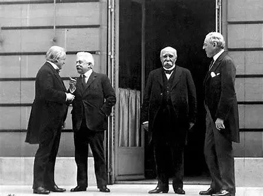
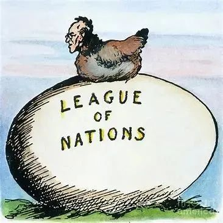
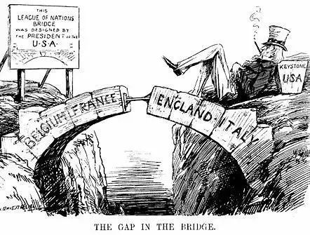
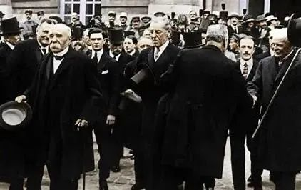

收录于合集
以下文章来源于同济战略派 ，作者约翰·伊肯伯里
 同济战略派 .
同济战略派 .
同济大学中国战略研究院

作品简介
作者： 约翰·伊肯伯里（G. John Ikenberry），生于1954年10月5日，现为普林斯顿大学政治系、伍德罗·威尔逊学院艾尔波特·米尔班克讲座教授（Albert G. Milbank Professor of Politics and International Affairs）。伊肯伯里在美国战略理论界、政策分析界、政府具有广泛的影响，是美国战略研究界中青年一代的领军人物，被公认为继保罗·肯尼迪、约翰·加迪斯（John Gaddis）之后美国最富盛誉的战略学者。他以经历丰富、精力丰沛、成果丰硕著称于战略研究界。
来源： 《大战胜利之后》，北京大学出版社2008年版。
正文

**
**
在威尔逊看来，国际联盟是将欧洲国家锁定在新型秩序中的桥梁。 它是整个战后安排的核心：这一制度将确保和平安排，加强民主治理。威尔逊希望德国纳入其中，这明显建立在对战后制度约束性功能的预期上。如果德国加入国际联盟，则会更好地接受监督和控制。对其他国家尤其是法国而言，国际联盟成效甚微，反而避开了更为重要的战后安全问题。 欧洲领导人确实需要一个和平安排，将美国与欧洲连结在一个更为传统的安全关系之中。 英国利用其对国际联盟的支持来加强更密切的安全联系，而法国寻求更为明确的交易：支持国际联盟，换取美国和英国的安全保证。
威尔逊希望改变欧洲政治，而勿需与欧洲共事或承担保护欧洲的责任。 美国想利用正在进行的民主革命来建立制度，将民主国家连结在一起，以确保延续到未来的、合意的世界秩序。美国战后所拥有的实力优势加强了威尔逊的野心，他利用战争来推进新自由外交。1918年10月，在停火谈判期间，威尔逊告诉一位支持美国寻求德国无条件投降的参议员，“我考虑的不仅仅是将美国至于强大和公正的地位。我要为100年而筹划。”在战后稳固长期收益的关头，威尔逊起而应之。 对威尔逊而言，这一逻辑比任何短期内获得特定领土或物质收益更有吸引力，国际联盟就是锁定这一长期收益的机制。
**
**
**
** 在威尔逊看来，国际联盟的约束性影响力将随着时间的推移而增强。
如果处于领导地位的民主国家联合行动建立该制度，就不再需要传统的安全承诺或领土保证了。欧洲领导人渴望并试图诱使美国加入现行的承诺。美国参战之后，某些英国官员呼吁威尔逊提出关于战后和平维护组织的具体方案，并标明美国将要发挥的作用。其他英国官员在后期依旧对支持国际联盟有所迟疑，因为它们不相信美国会批准该条约。法国更热望直接而具有约束性的承诺，建议在主要盟国之间成立三方同盟。
尽管欧洲领导人并未被美国的军事力量及战争期间美国的作用所慑服，但他们确实担心美国在欧洲的稳定性和欧洲对美国的依赖。
威尔逊是支持战后维持和平组织的第一个政府首脑，但是他的支持是模糊的，他并没有要求美国政府设计出包含细节的计划。 另一方面，英国官员急于得到威尔逊对联盟理念的支持，因此把这一理念发展为具体的制度性规划。惟当巴黎和会召开在即，威尔逊才试图提出美国的理念。 美国对国际联盟支持的模糊性表明，美国对战后欧洲安全承诺的不确定性广泛存在，英国和法国官员感受到了这一点。
**
**

最初推进战后联盟的，当属英国外交大臣格雷。他在1914年11月通过非官方渠道致电威尔逊，希望美国加入某种战后组织以确保和平。在随后的信中，格雷通过英国驻美大使塞西尔·斯普林·赖斯（Cecil Spring Rice）传递了类似的电文：“当战争结束之际，大国之间就未来的相互安全、和平维系等议题签署协议，如果美国参与其中，并准备参与武力镇压违背条约者，则协议可能具有稳定性。” 1915年8月，格雷致电豪斯上校，再次阐述建立战后联盟的理由，并提出了某些基本原则。在格雷看来，拒绝通过会议裁定争端是发动战争的“致命步骤”。 我们所需要的是“某个可以依赖的国家间联盟，坚持两国间的争端必须通过仲裁、调停和其他国家参加的会议来解决。国际法迄今没有制裁力。国际法给我们的教训是，大国必须捆绑在一起，共同实施制裁。”
1915年秋，豪斯提出了一个美英共同参与的计划，由威尔逊居中调停，达成和平安排。格雷回应说，如果美国同意加入战后国际组织来实现裁军、航海自由及通过联合行动维系和平，英国愿意合作。格雷的回应反映了英国的观点，需要将美国纳入战后和平的管理之中，尽可能提供持续而一贯的基础。在英国看来，战后联盟应服务于这一目标。
豪斯上校与格雷互换电文，表明威尔逊总统正在沿着与英国同样的思路考虑问题，但美方并没有具体的计划。同时，一群非官方的英国国际主义者，组织在前驻美大使詹姆斯·布莱斯勋爵（Lord James Bryce）周围，开始讨论和推广战后联盟的理念。 在大西洋两岸，“美国促进和平联盟”、“英国国家安全联盟”等协会团体开始鼓动有利于战后国家联合的公共舆论。

美国参战之后，英国官员继续私下向威尔逊政府呼吁，提出关于战后和平组织的具体计划。威尔逊关于其理念的惟一公开声明就是1918年1月的“十四点计划”演讲。 英国副外交大臣罗伯特·塞西尔勋爵（Lord Robert Cecil）在1917年9月与豪斯上校的通信中，敦促美国开始筹划战后和平方案；在1918年2月的通信中通告豪斯，英国将成立委员会研究具体的方案。威尔逊依旧没有行动。在一封私人信函中，威尔逊指出，“坦率地说，我并不认为，为实施和平而讨论正式组织联盟是明智的。原则很容易遵守，但组织的时机问题会将各种嫉妒引向前台，这原本不是处理其他敏感问题所需要应对的。”威尔逊试图推迟对联盟问题的讨论，因此不鼓励相关准备和筹划。 他最想做的，就是将该问题交给豪斯领导的一个研究小组，后者以调查处知名。威尔逊最主要关心的是，确定在不久将要召开的和平会议上盟国政府可能提出哪些要求。他依旧不想在联盟理念上引起国内大讨论。
英国进而详细说明了该联盟的具体特征。1918年3月，英国规划小组——即所谓的菲利摩尔委员会（Phillimore Committee）——提出一份中期报告，说明了联盟的关键特征。 它包括仲裁原则和在处理国家间争端时的联盟调停，对违背协议国家的制裁，联盟劝告后三个月的法定冷却期等。 菲利摩尔报告回顾了旧日的协调和大会机制，其核心看法是这样的框架只能在民主国家间推行，“尽管民主民族主义的发展似乎为将来的成功铺平了道路”，但军国主义国家和专制主义国家依旧是战后联盟的绊脚石。
直到1918年夏英国政府准备发表菲利摩尔委员会的结果时，威尔逊才积极关注联盟的细节问题。这位总统要求豪斯改写英国的报告，将美国的见解加入其中，最后形成的文件成为美国在和会上的建议案。 当1918年12月威尔逊乘船赶赴欧洲之际，他成为国际联盟理念的提倡者，但这样一个机构所需要的具体计划和承诺依旧是模糊的，国内政治讨论将澄清美国介入及其战后对欧洲义务的局限和可能性。
英国政府进一步完善其建议案，并以时任英国巴黎和会代表团国际联盟事务负责人的罗伯特·塞西尔勋爵的规划方案、帝国战时内阁成员、南非外交官简·斯马茨起草的一份影响颇大的联盟宪章草案为基础。 在组建国际联盟期间，英国政府内部的怀疑依旧存在，但绝大多数官员视之为引导美国进一步积极介入欧洲事务的途径。他们认为，战后制度将确立美国具体的承诺和保证。
1918年12月15日，威尔逊和克里孟梭数度会晤。在第三次会晤时，威尔逊提出了国际联盟的建议。 克里孟梭表明自己怀疑其可行性，但说值得一试。随后，克里孟梭受到来自国民议会中亲威尔逊的社会主义者的压力，他澄清了自己在国际联盟和战后安排上的立场，对本国政府批评其没有自己的和平计划做出了回应。 克里孟梭指出，“旧的体系似乎名誉扫地了，但是我依旧……对此充满信心。”他说，对他自己而言，盟国体系依旧对即将召开的会议具有指导意义。他的基本立场是，法国的安全需要大幅度、永久性地削减德国的军事力量。

威尔逊认为，相比法国，他在英国有更多的同盟者。但是劳合·乔治及其政治联盟的立场也是复杂的。 英国国内对国际联盟的支持声威颇壮，他们愿意支持联盟的概念，但劳合·乔治也力主对德国人严加处理。正如诺克指出的，英国在国际联盟问题上“有着组织良好的国内舆论”。1918年10月，两个主要的联盟组织合并，组成了联合国家联盟，劳合·乔治和贝尔福被选为荣誉主席。但在1918年12月的选举中，许多原本支持国际联盟的英国政治家——包括英国工党领袖阿瑟·亨德森（Arthur Henderson）——认为自己上当受骗了，劳合·乔治转而强调大众的观点，即和平安排必须从德国获得巨额战争赔偿，依法惩处德国皇帝。 在巴黎和会之前，英国领导人回顾帝国战时内阁的政策，倾向于在国际联盟问题上支持威尔逊，但必须满足其实质性赔偿的要求。劳合·乔治代表大多数人发言要求，如果他们在国际联盟问题上支持威尔逊，“尽管可能情非得已，但在我们认为重要的事务上”也要达成协议。
**
**
排版 | 陆霜滢
文章观点不代表本平台观点，本平台评译分享的文章均出于专业学习之用, 不以任何盈利为目的，内容主要呈现对原文的介绍，原文内容请通过各高校购买的数据库自行下载。